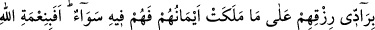

çoktur. Kısa zaman içinde öncekilerin ulaşamadıkları mertebelere ulaşırlar. Bu,
Allah’ın onlara bir ihsanıdır.
Bir hadiste şöyle buyrulmuştur: “Erkeklerinizin en hayırlıları, yaşlılarınıza
benzemeye çalışanlar; yaşlılarınızın en kötüleri ise gençlerinize benzemeye
çalışanlardır.” [171]
Fakir (Bursevî) der ki: Bu benzeme söz, fiil, hal, oturma, kalkma, giyinme ve benzeri
bütün durumlara şâmildir. Sûfî, mânâda ihtiyardır. Çünkü onun gâyesi bütün kötü huy ve
vasıflardan arınmaktır. Dolayısıyla yaşı genç de olsa yaşlılar gibi giyinmesi daha iyidir.
Bir hadiste şöyle buyrulmuştur: “Kimin üzerinden kırk yıl geçer de hâlâ hayrı şerrine
galib gelmezse, ateşe hazırlansın.” [172]
Yahya b. Muaz der ki: “Âhiret hayâtına göre dünyâdaki ömrün, tek bir nefes gibidir.
Nefesini zayi ettiğinde ebediliği kaybeder, hüsrâna düşenlerden olursun.”
Âyette fena ve bakâya işâret vardır. “el-Müteveffa” (ölen kişi): Varlığını isbattan fânî
olandır. “el-Merdûd” (geri döndürülen), kendi varlığını var edenin varlığıyla bâki
olandır. “Daha önce bilgili iken hiçbir şeyi bilmez hâle gelsin diye” ifâdesi, işinin
sonu kendi ilminin fenâ bulmasından sonra kendi ilmiyle bir şey bilmemesi, bilakis
Rabbi ile eşyâyı bilmesi, demektir. Nitekim et-Te’vîlâtü’n-necmiyye’de böyle
geçmektedir.
71. Allah kiminize kiminizden daha bol rızık verdi. Bol rızık verilenler, rızıklarını
ellerinin altındakilere verip de bu hususta kendilerini onlara eşit kılmazlar. Durum
böyle iken Allah’ın nîmetini inkâr mı ediyorlar?
“Allah” Teâlâ “kiminize kiminizden daha bol rızık verdi.” Yâni rızık konusunda
birbirinizden farklı kıldı. Sizden bir kısmınız zengin, bir kısmınız fakir, bir kısmınız
malik, diğer bir kısmınız da köledir. Rızık, Allah’ın canlılara verdiği yiyecek ve
içeceklerdir. Burada tenbih vardır ki malı çok olanın zenginliği, zekâsından, aklının
ileri ve çok çalışmasından değildir. Malı az olan fakirin fakirliği ise beceriksizliğinden,
aklının noksan ve çalışmasının az olmasından değildir. Bilakis Allah Teâlâ’dandır. Bu;
şairin şu sözünde ifâdesini bulur:
Nice akıllı kimse vardır ki, akıllı oluşu onun yollarını tıkamış;
Nice câhil kimse vardır ki, câhillik onu rızıkla karşılaştırmıştır.